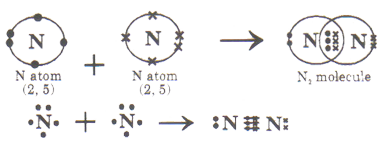
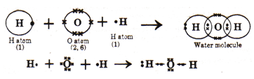
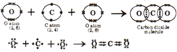
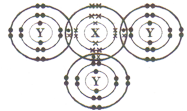

|
Common misconception |
Fact |
| 1 |
Substances made of ions do not conduct electricity in a solid state because it is in a neutral state and is not charged. |
Substances made of ions do not conduct electricity in the solid state but conduct electricity in the liquid state or in molten state. In a solid state the charged particles in substances made of ions are bonded to the fixed position and do not conduct electricity, |
| 2 |
Ionic compounds like AgCI, \( CaF_2 \) , are soluble in water. |
Even though AgCl, OF, are ionic compounds these have exceptionally high attractive forces in their lattice. Hence insoluble in water. |
| 3 |
During the bond formation only electrons in the outermost orbit are involved |
During the bond formation in case of representative elements only outermost orbit electrons are involved. In case of transition elements outermost penultimate electrons are involved. |
Introduction
Thomson Atomic Model
Matter exists as pure substances in the form of elements and compounds. Elements are made of smallest constituents as atoms whereas compounds contains molecules which are made of atoms as their constituents. The molecules are formed by the union of atoms by forces of attraction of developed between them which hold them together. This force of attraction is called a chemical bond. Chemical bonds are responsible for the existence of molecules. Compounds are made up of different kinds of molecules and there are millions of compounds.
Electro Valency Theory - Kossel and Lewi's approach of bonding
A number of attempts were made to explain the formation of chemical bonds in terms of electrons, but it was only in 1916, Kossel and Lewi's succeeded independently in giving a satisfactory explanation. They proposed a theory, based on electronic concept of atoms, known as electron theory of valency.
Postulates
Atoms with eight electrons in the outermost shell (two in case of Hydrogen, Helium, Lithium and Beryllium) are chemically more stable. The cause for chemical reaction is to attain stability. This is achieved by an atom by acquiring the octet configuration (inert gas configuration) in its outermost shell. The electrons present in the outermost shell of an atom are responsible for chemical reaction. The outermost shell is called valence shell and hence, the electrons present in it, are called valence electrons. The number of electrons taking part in a chemical reaction is called valency of that element. The atoms of various elements achieve the nearest inert gas configuration, either by transfer (losing or gaining) or by sharing of electrons with another atom. This transfer or sharing of electrons results in the development of an attractive force between the atoms, which holds the atoms together by a bond.
Electron Dot structure of atom-Lewi's symbols
G.N. Lewi's introduced simple symbols called Lewi's symbols to denote the valence electrons in an atom. This helps to explain the various types of bonds.
Lewi's symbols:
The symbol of the element surrounded by the valence electrons of its atom, represented in the form of dots or cross around it is known as Lewi's symbol or electron dot symbol.
Example : 1
Element = Lithium - Symbol = Li
Atomic No.= 3 - E.C = 2, 1
\( _3{Li} \rightarrow 1s^2 \ 2s^1 \)
Lewi's Symbol = Li \( \bullet \) - No. of electrons in valence shell = 1
Example : 2
Element = Carbon - Symbol = C
Atomic No.= 6 - E.C = 2, 4
\( _6{C} \rightarrow 1s^2 \ 2s^2 \ 2p^2 \)
Lewi's Symbol = \( \bullet \underset{\bullet}{\overset{ \bullet} C} \bullet \)
No. of electrons in valence shell = 4
Note :
While writing the Lewis symbols, ignore the inner shell electrons.
Covalent Bond
A covalent bond is formed by mutual sharing of unpaired electrons between two atoms.
Types of Covalent bond
two types of covalent bonding are nonpolar covalent bond and polar covalent bond.
Nonpolar covalent bond
Nonpolar covalent bond is formed when equitable sharing of electrons between the bonded atoms takes place. Due to equitable sharing it does not result in any charge separation within the molecule.
Examples \( H_2, \ O_2, \ N_2, \ Cl_2 \) etc
Polar covalent bond
Polar covalent bond is formed when unequal sharing of electrons between the bonded atoms takes place. Due to unequal sharing it results in charge separation within the molecule leading to the arise of partial charges.
Examples \( H_2 O, \ HF, \ NH_3 \) etc
Covalency
Covalency in the number of electron pairs shared by an atom of an element in the formation of a covalent compound.
The covalent bond, formed between two atoms by the sharing one pair of electrons, is a single bond. E.g.: \( Cl_2, \ F_2,\ H_2, \ HCl \) . The covalent bond, formed between two atoms by the sharing of two pairs of electrons, is a double bond. E.g : \( O_2, \ C_2H_4, \ CO_2 \) . The covalent bond, formed between two atoms by the sharing of three pairs of electrons, is a triple bond. E.g.: \( N_2, \ C_2H_2 \) . If the central atom in a molecule does not have octet, it is called an electron deficient molecule. E.g.: \( BCl_3, \ AlCl_3 \) . In several compounds, like \( PCl_5, \ SF_6, \ IF_7 \) etc., the central atom has more than octet. So these deviate from octet rule.
Note
Lewis theory cannot explain the shapes and bond angles in molecules.
-
The molecules in a covalent compound' are attracted by weak vander Waal's forces of attraction. So covalent compounds have low melting and boiling points
-
They dissolve in non-polar solvents like benzene, \( CCl_4 \) etc., However, polar covalent compounds dissolve in polar solvents like water, alcohol etc.,
-
compounds do not conduct electricity either in the molten state or in aqueous solutions, because of the absence of ions or free electrons.
-
Covalent bond is directional and so covalent compounds exhibit isomerism.
-
The reactions, involving covalent compounds, are slow due to bond breaking and formation of new bonds.
-
KOH, NaOH, KCN, \( KNO_3 \) etc., contain both covalent and ionic bonds.
Coordinate covalent Bond or Dative Bond
It was proposed by Sidgwick. An atom contributes both the electrons for mutual sharing and that electron pair is shared by the two atoms. Such a covalent bond is called coordinate covalent bond or dative bond. The atom or ion or molecule, which donates the electron pair, is called donor. The atom or ion or molecule, which accepts the electron pair, is called acceptor.
The dative bond is represented by an arrow from donor to acceptor. Coordinate covalent bond is directional. \( CO, \ SO_2, \ SO_3, \ H_3O^{+}, \ NH_4^{+} \) contain both covalent and coordinate bonds. \( NH_4C1, \ NH_4NO_3, \ CuSO_4. 5H_2 O \) contain ionic, covalent and coordinate bonds.
Examples (1): \( H_3 O^{\oplus} ( H_2O \rightarrow H^{\oplus}), \ H_3N : \rightarrow \ \overset{\oplus}{H} \)
Examples (2): Structure of \( NH_4^{\oplus} \ [NH_3 \rightarrow H^{+} ] \)
Examples (3): \( NH_3 \rightarrow BF_3 \)

Properties of Coordinate covalent compounds
The properties of coordinate covalent compounds are similar to those of covalent compounds.
-
Coordinate covalent compounds dissolve more in non-polar solvents than in polar solvents.
-
The melting and boiling points of coordinate covalent compounds are in between ionic compounds and covalent compounds.
-
Coordinate covalent compounds do not conduct electricity in molten state or in aqueous solution.
Solved examples
Example 1:
In the formation of the compound AB, atoms of A lost one electron each while atoms of B gained one electron each. What is the nature of bond in AB? Predict the two properties of AB.
Solution:
Here, the atoms of A lose electrons whereas the atoms of B gain electrons. This means that there is a transfer of electrons from atoms of A to atoms of B. Now the bond formed by the transfer of electrons is called electrovalent bond or ionic bond. So the nature of bond in the compound AB is electrovalent or ionic. The two properties of the ionic compound AB will be soluble in water and it will conduct electricity when dissolved in water or melted.
Example 2:
An element X combine with oxygen to form an oxide \( X_2O \) . This oxide is electrically conducting.
-
How many electrons would be there in the outermost shell of the element X
-
To which group of the periodic table does the element X belong.
-
Write the formula of the compound which is formed when X reacts with chlorine.
Solution:
The compound \( X_2O \) is electrically conducting, so it is an electrovalent compound or ionic compound, and hence it is made up of ions. Now, Oxygen has an electrovalency of 2- and forms oxide ion \( O^{-2} \) . So, \( X_2O \) can be written as \( 2 X^{+}O^{-2} \) . It shows that the valency of X is \( 1^{+} \)
-
Since the element X from \( X^{+} \) ion having 1 unit positive charge, so it will have 1 electron in its outermost shell (or valence shell) of its atom.
-
Since the element X has 1 valence electron. So it belongs to group 1 of the periodic table
-
The valency of X is 1 and that of chlorine is also 1, so the formula of compound between X and chlorine will be XCl.
We know that the element sodium (Na) belongs to group I of the periodic table and it has 1 electron in the outermost shell of its atom. So the element X of the above given problem may be sodium. Thus the oxide \( X_2 O \) of this problem may infact be sodium oxide, \( Na_2 O \) . We also know that sodium reacts with chlorine to form sodium chloride. So, the chloride XCl of this problem may be sodium chloride, NaCI.
Example 3:
Three elements A,B,C belong to IIA, IV A, VI A group respectively of the periodic table Identify the elements that form covalent bonds and that form electrovalent bond?
Solution:
A covalent bond is formed between two non metal elements. Now out of elements A , B and C, the element B and element C are non metals. Thus the elements B and c will form covalent bonds. An electrovalent bond is formed between a metal and a non metal Now, out of the above elements, the element A is metal and element C is a non metal. Thus elements A and C will form an electrovalent bond. Even though the element B is also a non metal, but it usually does not form electrovalent bonds.
Example 4:
Elements with low ionization potential and high electron affinity form ionic type bonds. Which type of bonds are formed among the elements with high ionization potential and high electron affinity.
Solution:
Covalent bond is formed between elements with high ionization potential and high electron affinity because an element with high ionization potential has a greater value of electro negativity. Due to this the electro negativity difference between the two elements is very less.
Example 5:
Arrange BF, BCl, BBr and BI, in the increasing order of their covalent nature.
Solution:
The less the electronegativity difference more is the covalent character. In the given compounds bromine remains the same and the ascending order of the electronegativity of the elements is iodine, bromine, chlorine, fluorine. Hence the increasing order of covalent character is BF, BCl, BBr and BI.
Example 6:
Why \( CCl_4 \) does not conduct electricity?
Solution:
\( CCl_4 \) is a non polar covalent compound with C-Cl bonds oriented in all directions symmetrically resulting in net polarity to be neutral.
Example 7:
Why are some covalent molecules polar?
Solution:
Covalent compounds are formed by the sharing of electrons due to little difference in their ectronegativity. In the formation of polar covalent compounds, due to slight difference in their electronegativity their arises partial positive and negative charges leading to the formation of polar molecules.
Example 8:
Formation of \( O^{-} \) is exothermic, whereas formation of \( O^{-2} \) is endothermic. Explain
Solution:
During the formation of \( O^{-} \) from O, an electron has to be added to the neutral atom of oxygen. This results in release of energy and hence is exothermic. It can be shown as follows:
\( O + 1 e^{-} \rightarrow O^{-} + energy \)
whereas, for the formation of \( O^{--} \) from \( O^{-} \) an electron has to be added to the unit negative ion.
\( O^{-} + 1 e^{-} \rightarrow O^{-2} \)
The extra negative charge on \( O^{-} \) results in repulsion , of second electron that is to be added. To overcome this repulsion external energy has to be supplied to \( O^{-} \) oxygen ion. So during formation of \( O^{-2} \) , energy is absorbed by \( O^{-} \) , making the formation of \( O^{-2} \) an endothermic process. Hence, formation of \( O^{-} \) is exothermic, whereas formation of \( O^{-2} \) is endothermic.
Example 9:
What are the conditions for a species to act as a donor and an acceptor during dative bond formation?
Solution:
A donor atom is one that loses electrons easily. Hence, must possess less ionization potential, big size and less charge on cations.
In case of acceptor atom to gain electrons easily it must possess more electron affinity, less size and less negative charge on anions .
Example 10:
Why does KCl easily dissolve in water?
Solution:
KC1 is an ionic compound. Hence dissolves readily in polar solvents like water due to existence in the form of ions.
Example 11:
Explain the formation of nitrogen molecule
Solution:
Electron configuration of N : 2, 5 \( _7N \rightarrow 1s^2 \ 2s^2 \ 2p^3 \)
Each N atom contributes 3 electrons for sharing.
Two N atoms share three pairs of electrons so that each atom can achieve a stable noble gas configuration similar to neon (2, 8).
A triple bond is formed between the two nitrogen atoms.

Example 12:
Explain the formation of water molecule.
Solution:
Electron configuration of 0 : 2, 6
Each oxygen atom contributes 2 electrons for sharing.
Electron configuration of H : 1
Each hydrogen atom contributes 1 electron for sharing.
Therefore two hydrogen atoms are needed to contribute a total of 2 electrons for sharing.
One oxygen atom and two hydrogen atoms share two pairs of electrons so that each atom can achieve a stable noble gas configuration - the oxygen atom achieves the electron configuration of neon (2, 8) while each hydrogen atom achieves the electron configuration of helium (2).
Two single bonds are formed between the oxygen and hydrogen atoms.

Example 13:
Explain the formation of carbon dioxide molecule.
Solution:
Electronic configuration of C : 2, 4 \( _6C \rightarrow 1s^2 \ 2s^2 \ 2p^2 \)
Each C atom contributes 4 electrons for sharing.
Electronic configuration of O : 2, 6 \( _8O \rightarrow 1s^2 \ 2s^2 \ 2p^4 \)
Each P atom contributes 2 electron for sharing.
Therefore two 0 atoms are needed to contribute a total of 4 electrons for sharing.
One C atom and two O atoms share four pairs of electrons so that each atom can achieve a stable noble gas configuration similar to neon (2, 8). Two double bonds are formed between the carbon and oxygen atoms.

Example 14:
An element X has proton number 15, while element Y has proton number 17, Draw a 'dot and cross' diagram to show all electrons in a molecule formed from X and Y.
Solution:
Electronic configuration of X is 2, 8, 5 \( X \rightarrow 1s^2 \ 2s^2 \ 2p^6 \ 3s^3 \ 3p^3 \)
Each X atom contributes 3 electrons for sharing.
Electronic configuration of Y is 2, 8, 7 \( Y \rightarrow 1s^2 \ 2s^2 \ 2p^6 \ 3s^2 \ 3p^5 \)
Each atom of Y contributes 1 electron for sharing.
Therefore 3 atoms of Y contribute 3 electrons for sharing.
One atom of X will share 3 pairs of electrons with 3 atoms of Y to achieve noble gas configuration.
